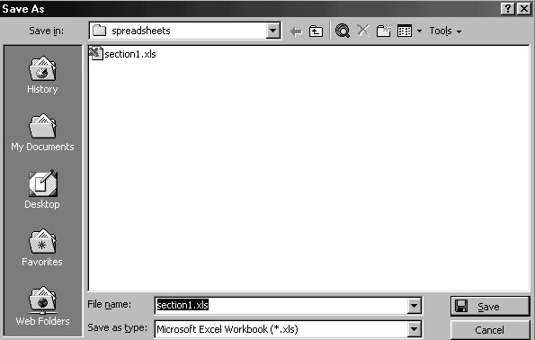
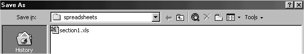
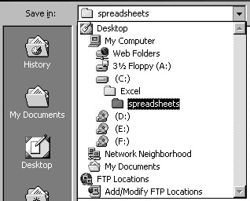
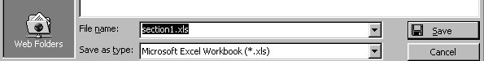
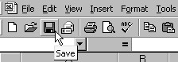

Free
computer Tutorials
|
Free
computer Tutorials
|
|
 HOME HOME
|
Stay at Home and Learn | |||||
Saving your work in Excel
Time now to save what you've done. To save your spreadsheet in Excel, do the following:
 The Save As dialogue box is split into three basic sections: Where do you want to save it; the files already in that location; and what do you want to call your file. Let's examine the first section more closely - Where do you want to save it . The top of the dialogue box looks like this:  Just to the right of the words "Save in" is a drop down box. At the moment it says "spreadsheets", and there is a little folder icon next to it. This is telling us that there is a folder on our hard drive called "spreadsheets". We're saving our new work in this folder. If we click the black down-pointing arrow, we get this:  You can change where you want your work to be saved by clicking on any of the locations on the list. This drop down box is telling is that we have a folder called spreadsheets. This spreadsheets folder is inside another folder, called Excel. The Excel folder is on the C drive. By creating a folder called spreadsheets, which is inside a folder called Excel, we can keep track of where our work is more easily. Just saving it anywhere on the C drive is not a good idea: it's often very difficult to find the work again when it's needed. So we have a folder called "spreadsheets". The next section of the Save As dialogue box, the big white area, shows the files already in that location. In the image, only one file was showing - section1.xls. We can add as many files as we like to our spreadsheets folder. To do that, we need the third part of the Save As dialogue box. This part:  The File name is already highlighted. We can type something else there, a new name for our file. Type in anything you like, and then examine the box below it- Save as type. The box says "Microsoft Excel Workbook". This is exactly what we want, so no changes are needed. But if you click the black down-pointing arrow, you'll see other options: Web page, Template, Text, and so on. But click the Save button when you've chosen a File name, and set the Save as type to "Microsoft Excel Workbook(*.xls)". Your new spreadsheet is saved. Keep clicking File > Save on a regular basis to keep updating your work. Alternatively, click the Save icon on the toolbar: 
OK, the time for your first Excel Project. It's a nice and easy one, so there's no need to worry. <-- Back One Page Move on to the Project --> <--Back to the Excel Contents Page
|
||||||
|